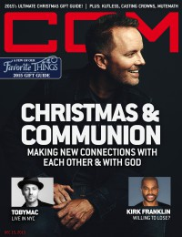

CCM Digital, 15 Dec 2015
| Cover |
|---|
|  |
 Online Exclusively Online Exclusively |
| Writers in this Issue |
| Argyrakis, Andy Conner, Matt Greer, Andrew Sarachik, Justin Sparkman, Kevin |
Andrew Greer
Article:- "Q&A With Kirk Franklin" by Andrew Greer
- "Praying For An Awakening"
- "Hymns - Gifts of Grace"
- "From the Living Room to 'Johnn & June's Room'"
- Kirk Franklin - Losing My Religion by Matt Conner
- Kutless - Surrender by Matt Conner
- Casting Crowns - A Live Worship Experience by Matt Conner
- Trans-Siberian Orchestra - Letters From the Labyrinth by Andy Argyrakis
- Mute Math - Vitals by Kevin Sparkman
- Phillip Larue - You by Matt Conner
- Alaché - The Chronicles of the Mrs. by Andy Argyrakis
- Mark Lowry - How We Love by Andy Argyrakis
- "TOBYMAC Continues To Set The Standard For Christian Music's Live Show - Performs Poignant NYC Tour Date Hours After Paris Attacks" by Justin Sarachik
Relevant Links
For more information about CCM Digital visit .This issue is available exclusively online.
© 2011 CMnexus. Last updated September 2019. Contact: editor -AT- cmnexus -DØT- org About